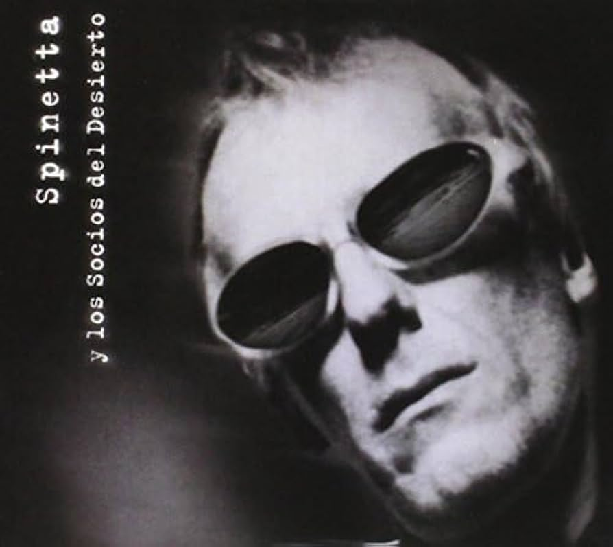

1994: LOS SOCIOS DEL DESIERTO: EL ROCK TOTAL
El flaco, acompañado por Daniel Wirtz en batería, y Marcelo Torres en bajo, conformaron una de las bandas más icónicas de los años 90s, dando increíbles conciertos, y llegando a participar en uno de los acústicos de MTV, además de la grabación de un album en vivo.
Con dos discos, el primero que lleva el nombre de la banda, y "Los ojos", además de otras versiones y recitales, este trío logró devolver a la escena local el rock más visceral, y posicionar a Spinetta en un viaje hacia Jimi Hendrix, y los clásicos temas con distorsión que había dejado en Pescado Rabioso.
En el siguiente link está su canal oficial de Youtube donde podemos escuchar toda su discografía
